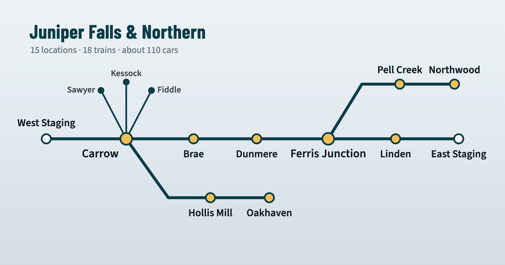

Operations Pro Walkthrough
Forty-three things you can set up on a model railroad, each one shown working on an invented one, the Juniper Falls & Northern.

Every case: What you can build · Why you'd want it · How it works · Set it up · Find it · See it work · Try this.
To follow along you need the railroad's files: see Before you begin.
Loading the walkthrough…